config = Config()shot_chart
Plots the NBA shot_charts and shot distribution for players, teams and the whole league.
Config
Config ()
Initialize self. See help(type(self)) for accurate signature.
URLs
URLs ()
Global constants for dataset and model URLs.
Downloading
download_url
download_url (url, dest, overwrite=False, pbar=None, show_progress=True, chunk_size=1048576, timeout=4, retries=5)
Download url to dest unless it exists and not overwrite
download_data
download_data (url, fname=None, c_key='archive', force_download=False)
Download url to fname.
Extract
file_extract
file_extract (fname, dest='.')
Extract fname to dest using tarfile or `zipfile
file_extract is used by default in untar_data to decompress the downloaded file.
URLs.path(URLs.SHOTS_2024)Path('/Users/ccalderon/.shot_chart/archive/shots-2024.tgz')untar_data
untar_data (url, fname=None, dest=None, c_key='data', force_download=False, extract_func=<function file_extract>)
Download url to fname if dest doesn’t exist, and un-tgz to folder dest.
make_df
make_df (path)
Creates a pandas dataframe from path
shots_2021 = make_df(untar_data(URLs.SHOTS_2021))Using the delegate function from https://www.fast.ai/2019/08/06/delegation/
delegates
delegates (to=None, keep=False)
Decorator: replace **kwargs in signature with params from to
Creating a class - Shots
Shots
Shots (dataframe)
Plots shot chart and most/least effective shots using plot_shots and plot_effective
shots = Shots(shots_2021)shots.players0 Grayson Allen
1 Giannis Antetokounmpo
3 Nic Claxton
6 James Harden
7 Brook Lopez
...
203149 Gabriel Lundberg
212992 Gabe York
214228 Feron Hunt
215071 Matt Ryan
216187 Arnoldas Kulboka
Name: shots_by, Length: 596, dtype: objectshots.plot_shots()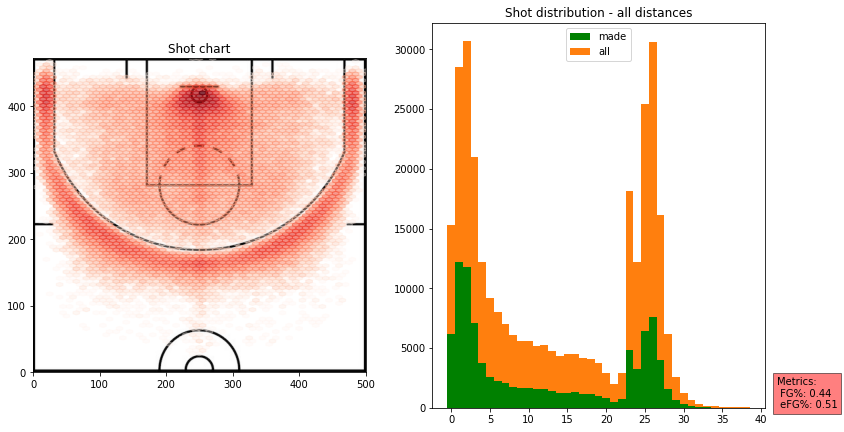
shots.plot_shots(date_range=((2021,11,1), (2021,11,18)))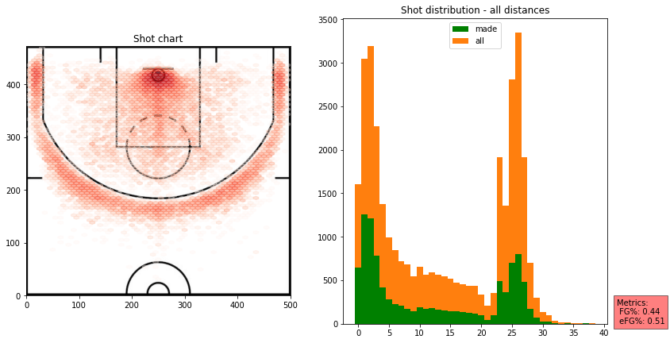
shots.plot_shots(date_range=((2021,12,17), (2021,12,18)))
shots.list_game_ids(2021, 11, 17)| game_id | winner | loser | |
|---|---|---|---|
| 29106 | 202111170POR | Portland | Chicago |
| 33398 | 202111170PHO | Phoenix | Dallas |
| 33582 | 202111170OKC | Oklahoma City | Houston |
| 33764 | 202111170NYK | Orlando | New York |
| 33948 | 202111170MIN | Minnesota | Sacramento |
| 34121 | 202111170MIL | Milwaukee | LA Lakers |
| 34304 | 202111170MIA | Miami | New Orleans |
| 34463 | 202111170DET | Detroit | Indiana |
| 34621 | 202111170CHO | Charlotte | Washington |
| 34807 | 202111170BRK | Brooklyn | Cleveland |
| 34979 | 202111170ATL | Atlanta | Boston |
shots.plot_shots(date_range="202111170PHO")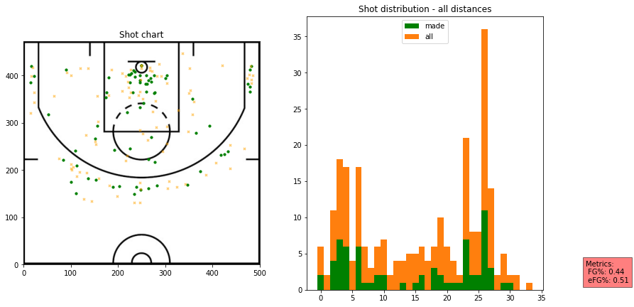
shots.plot_effective(most_or_least="most", metric="efg")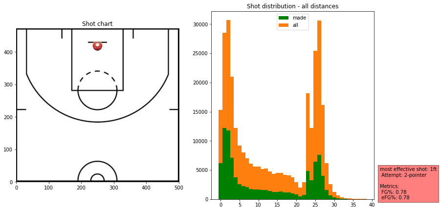
shots.plot_effective(most_or_least="most", metric="efg", exclude=['0ft','1ft','2ft','23ft'])
shots.plot_effective(most_or_least="most", min_shots="auto",exclude=['1ft','2ft','23ft','24ft','25ft','26ft','27ft'])
shots.plot_effective(most_or_least="least", min_shots='auto',exclude=['24ft','23ft'])
List teams
list_teams
list_teams (dataframe)
Lists all the teams in dataframe
print(list_teams(shots_2021))0 Milwaukee
3 Brooklyn
189 Oklahoma
190 Utah
371 Miami
551 Washington
552 Indiana
742 Dallas
743 Toronto
917 Sacramento
918 Golden State
1100 Chicago
1264 Denver
1608 Atlanta
1796 Orlando
1967 LA Clippers
1968 Portland
2153 New Orleans
2330 Charlotte
2511 LA Lakers
2512 Cleveland
3009 Detroit
3011 Philadelphia
3171 Houston
3351 Memphis
3538 San Antonio
3716 New York
4063 Phoenix
4788 Minnesota
5321 Boston
Name: team, dtype: objectList unique game ids
list_game_ids
list_game_ids (dataframe, year, month, day)
Lists unique game ids in dataframe for a given date
list_game_ids(shots_2021,2021,11,17)| game_id | winner | loser | |
|---|---|---|---|
| 29106 | 202111170POR | Portland | Chicago |
| 33398 | 202111170PHO | Phoenix | Dallas |
| 33582 | 202111170OKC | Oklahoma City | Houston |
| 33764 | 202111170NYK | Orlando | New York |
| 33948 | 202111170MIN | Minnesota | Sacramento |
| 34121 | 202111170MIL | Milwaukee | LA Lakers |
| 34304 | 202111170MIA | Miami | New Orleans |
| 34463 | 202111170DET | Detroit | Indiana |
| 34621 | 202111170CHO | Charlotte | Washington |
| 34807 | 202111170BRK | Brooklyn | Cleveland |
| 34979 | 202111170ATL | Atlanta | Boston |
Inheriting from Shots to create TeamShots
TeamShots
TeamShots (dataframe, team)
Team shots
team_shots = TeamShots(shots_2021,"Portland")team_shots.team'Portland'team_shots.plot_shots()
team_shots.plot_effective()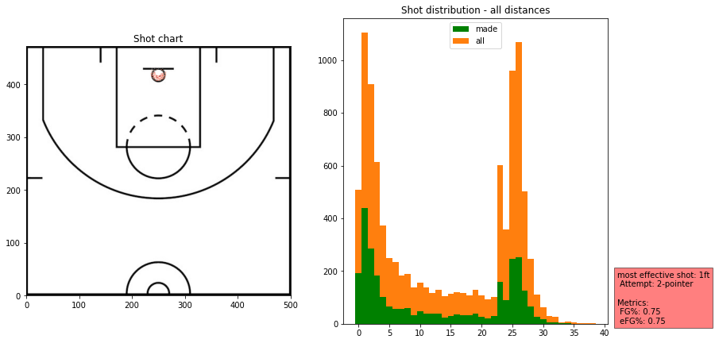
team_shots.dataframe.loc[(team_shots.dataframe['distance']=='24ft') & (team_shots.dataframe['attempt']=='2-pointer')]| Unnamed: 0 | game_id | year | month | day | winner | loser | x | y | play | time_remaining | quarter | shots_by | outcome | attempt | distance | team | winner_score | loser_score | |
|---|---|---|---|---|---|---|---|---|---|---|---|---|---|---|---|---|---|---|---|
| 103047 | 102971 | 202201130DEN | 2022 | 1 | 13 | Denver | Portland | 268px | 256px | 4th quarter, 3:41.0 remaining<br>Tony Snell ma... | 3:41.0 | 4 | Tony Snell | made | 2-pointer | 24ft | Portland | 128 | 99 |
| 185595 | 185678 | 202203280POR | 2022 | 3 | 28 | Oklahoma City | Portland | 261px | 312px | 1st quarter, 7:36.0 remaining<br>Keon Johnson ... | 7:36.0 | 1 | Keon Johnson | missed | 2-pointer | 24ft | Portland | 11 | 12 |
team_shots.plot_effective(most_or_least="least")
team_shots = TeamShots(shots_2021,"Houston")team_shots.plot_shots()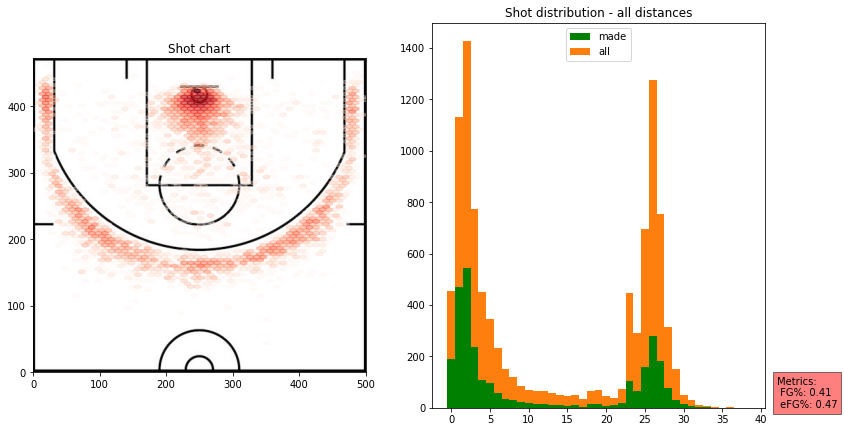
team_shots.plot_shots(date_range=((2021,12,3), (2021,12,8)))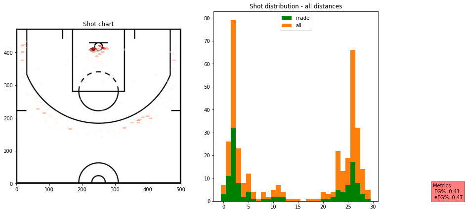
team_shots.plot_effective("least")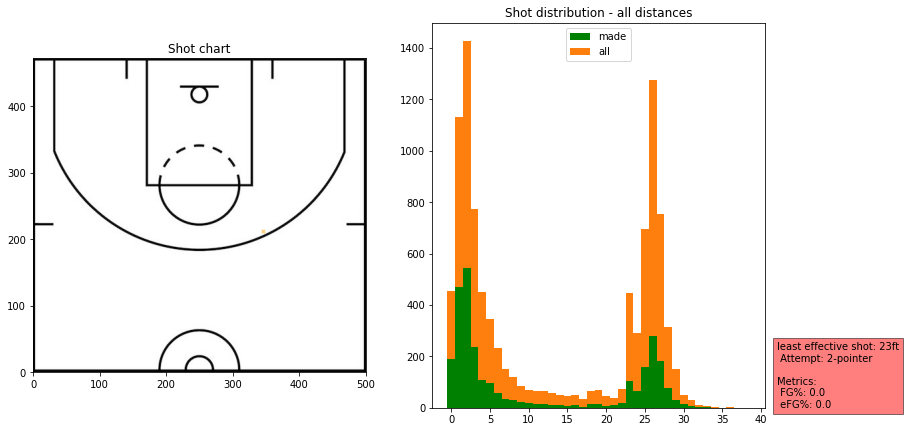
team_shots = TeamShots(shots_2021,"LA Lakers")
team_shots.plot_shots()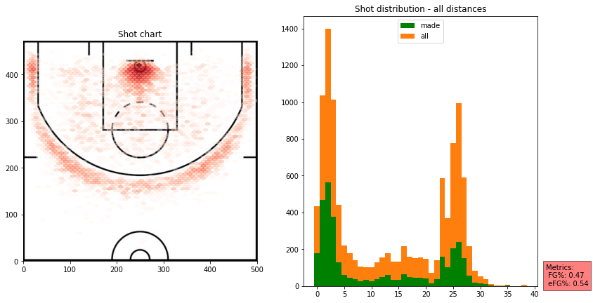
List players who took shots for a team
list_team_players
list_team_players (dataframe, team)
Lists the players in dataframe who took shots for a team
list_team_players(shots_2021,'LA Lakers')| shots_by | count | |
|---|---|---|
| 18 | Russell Westbrook | 1233 |
| 13 | LeBron James | 1221 |
| 15 | Malik Monk | 824 |
| 3 | Carmelo Anthony | 723 |
| 0 | Anthony Davis | 695 |
| 21 | Talen Horton-Tucker | 537 |
| 2 | Avery Bradley | 349 |
| 1 | Austin Reaves | 315 |
| 20 | Stanley Johnson | 251 |
| 23 | Wayne Ellington | 237 |
| 8 | Dwight Howard | 219 |
| 12 | Kent Bazemore | 136 |
| 22 | Trevor Ariza | 99 |
| 24 | Wenyen Gabriel | 97 |
| 7 | DeAndre Jordan | 89 |
| 5 | D.J. Augustin | 86 |
| 17 | Rajon Rondo | 71 |
| 9 | Isaiah Thomas | 39 |
| 16 | Mason Jones | 15 |
| 19 | Sekou Doumbouya | 8 |
| 6 | Darren Collison | 7 |
| 4 | Chaundee Brown | 7 |
| 14 | Mac McClung | 5 |
| 11 | Jemerrio Jones | 3 |
| 10 | Jay Huff | 3 |
Inheriting from Shots to create PlayerShots
PlayerShots
PlayerShots (dataframe, player)
Player shots
player_shots = PlayerShots(shots_2021,"Kevin Durant")player_shots.fg_pct0.52player_shots.efg_pct0.57player_shots.plot_shots()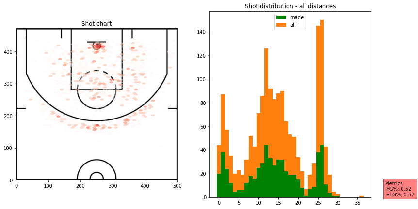
player_shots = PlayerShots(shots_2021,"Russell Westbrook")player_shots.plot_shots(distance_limit=(16,26),attempt="2-pointer")
player_shots.plot_effective(metric="efg", exclude=['0ft','22ft',"1ft"])
player_shots.plot_effective(metric="efg", min_shots="auto",exclude=['2ft'])
player_shots = PlayerShots(shots_2021,"James Harden")player_shots.plot_effective(metric="efg", exclude=['16ft',"0ft","11ft",'1ft'])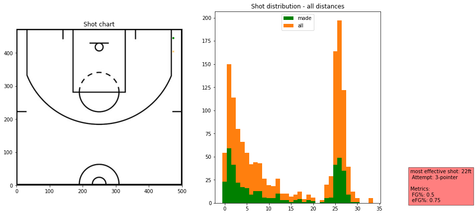
player_shots.plot_effective(min_shots="auto",exclude=['1ft','28ft','2ft','3ft'])
player_shots = PlayerShots(shots_2021, 'Paul George')player_shots.list_game_ids(2021,11,16)| game_id | winner | loser | |
|---|---|---|---|
| 35143 | 202111160LAC | LA Clippers | San Antonio |
player_shots.plot_shots()
player_shots.plot_effective()
player_shots.plot_shots(date_range='202111160LAC')